 Conflux Faucets
for Core Space and eSpace

Connect Metamask
Read more information on Conflux ecosystem and faucets by clicking the big blue information button below.
There is also how-tos, frequently asked questions, how-to videos and useful Conflux ecosystem links.